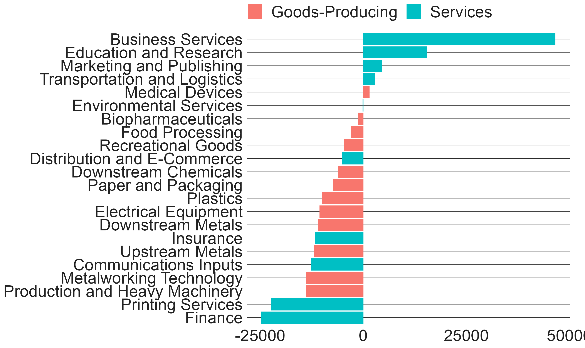
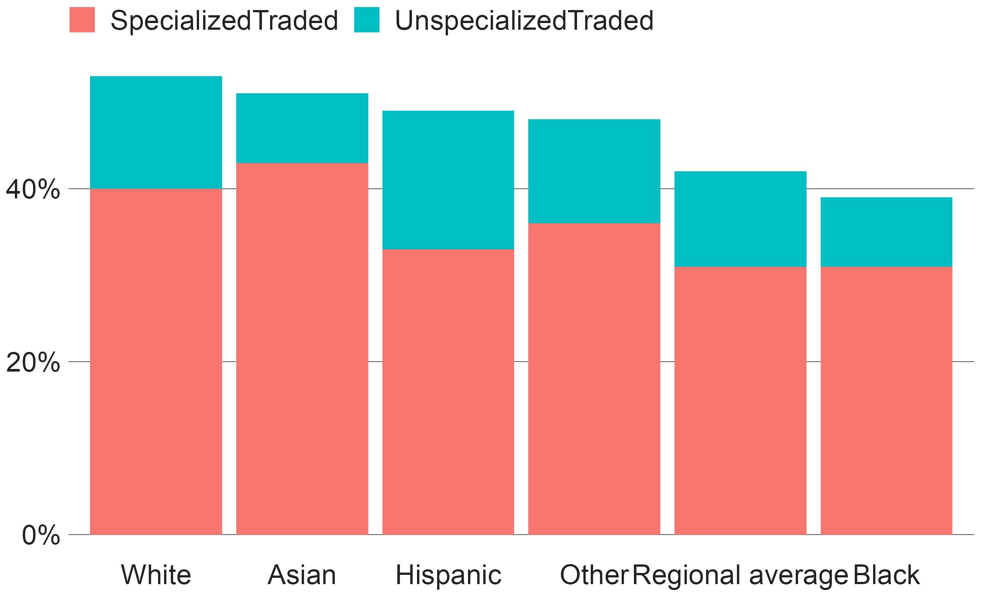
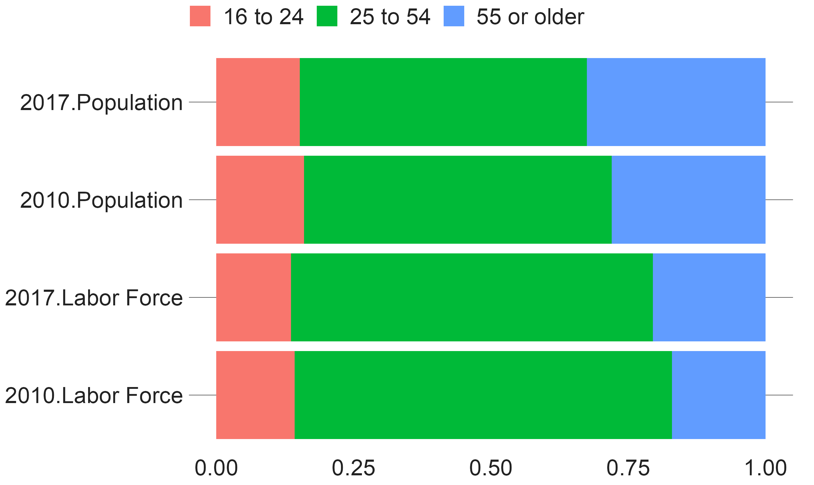
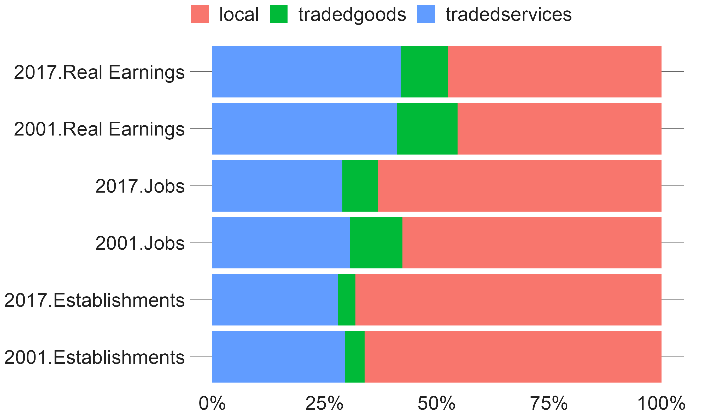
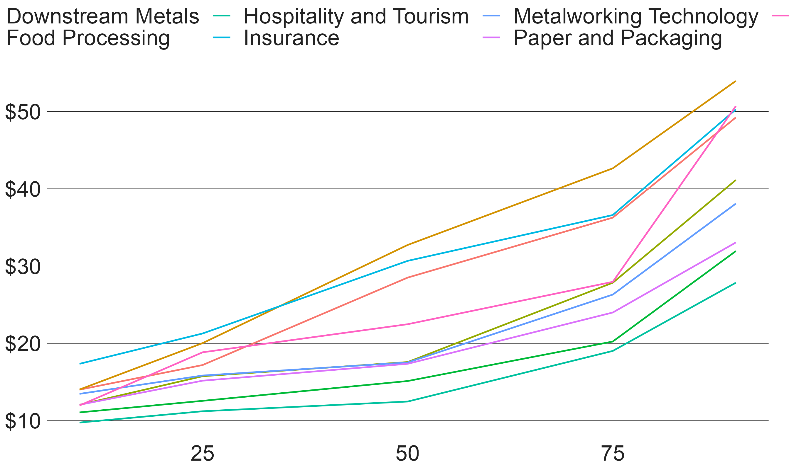
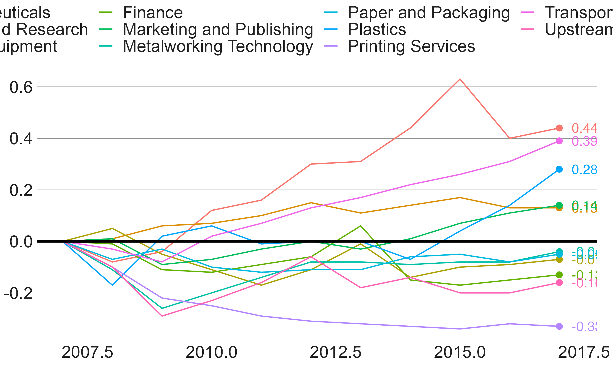

This vignette uses the package’s sample datasets to create a wide variety of example plots. The plots have been selected to showcase the code necessary to produce high quality graphics under a variety of circumstances.
For testing, the cmapplot package contains a variety of sample datasets. Each dataset has a man file that can be queried for additional details. Datasets currently included are:
#> cluster_jobchange
#> economy_basic
#> grp_over_time
#> percentile_wages
#> pop_and_laborforce_by_age
#> traded_emp_by_race
#> transit_ridership
#> vehicle_ownership# A bar chart ggplot(cluster_jobchange, aes(x = reorder(name, jobchange), y = jobchange, fill = category)) + geom_col() + coord_flip() + theme_cmap() #> 'Whitney' font family not found. Using a substitute...

# a stacked bar chart filter(traded_emp_by_race, variable %in% c("SpecializedTraded", "UnspecializedTraded")) %>% ggplot(aes(x = reorder(Race, -value), y = value, fill = variable)) + geom_col(position = position_stack(reverse = TRUE)) + scale_y_continuous(labels = scales::percent) + theme_cmap() #> 'Whitney' font family not found. Using a substitute...

# a grouped and stacked bar chart (via `interaction()`) ggplot(pop_and_laborforce_by_age, aes(x = interaction(year, variable), y = value, fill = age)) + geom_col(position = position_stack(reverse = TRUE)) + coord_flip() + theme_cmap() #> 'Whitney' font family not found. Using a substitute...

# a grouped and stacked bar chart (via `interaction()`) ggplot(economy_basic, aes(x = interaction(year, variable), y = value, fill = sector)) + geom_col(position = "fill") + scale_y_continuous(labels = scales::percent) + coord_flip() + theme_cmap() #> 'Whitney' font family not found. Using a substitute...

# a non-time-series line chart ggplot(percentile_wages, aes(x = percentile, y = wage, color = cluster)) + geom_line() + scale_y_continuous(labels = scales::dollar) + theme_cmap() #> 'Whitney' font family not found. Using a substitute...

# a time-series line chart ggplot(grp_over_time, aes(x = year, y = realgrp, color = cluster)) + geom_line() + geom_text_lastonly(add_points = TRUE) + theme_cmap() + geom_hline(yintercept = 0, color = "black", size = 1) #> 'Whitney' font family not found. Using a substitute...
